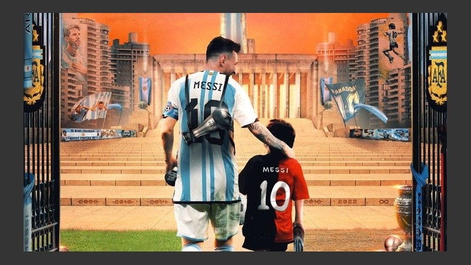
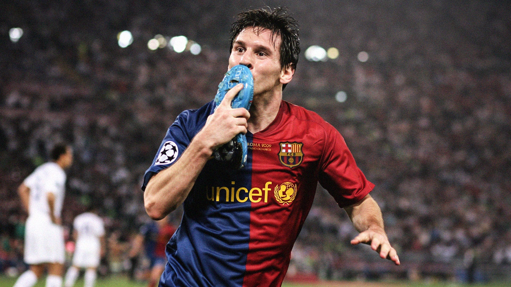

Messi
Lionel Andrés Messi Cuccittini, nacido en Rosario, Argentina el 24 de junio de 1987, conocido como Leo Messi, es un futbolista argentino que juega como delantero. Jugador histórico del Fútbol Club Barcelona, al que estuvo ligado veinte años, desde 2021 integra el plantel del Paris Saint-Germain de la Ligue 1 de Francia. Es también internacional con la selección de Argentina, equipo del que es capitán.
Considerado con frecuencia el mejor jugador del mundo y uno de los mejores de todos los tiempos es el único futbolista en la historia que ha ganado, entre otras distinciones, siete veces el Balón de Oro, siete premios de la FIFA al mejor jugador del mundo, seis Botas de Oro y dos Balones de Oro de la Copa Mundial de Fútbol. En 2020, se convirtió en el primer futbolista y el primer argentino en recibir un premio Laureus y fue incluido en el Dream Team del Balón de Oro
Con el Barcelona ha ganado 35 títulos, entre ellos, diez de La Liga, cuatro de la Liga de Campeones de la UEFA y siete de la Copa del Rey.

Goleador prolífico, ostenta, entre otros, los récords por más goles en una temporada, en un mismo club y en un año calendario. Es, además, el máximo goleador histórico del Barcelona y de la selección argentina, de La Liga, la Supercopa de España, la Supercopa de Europa y el jugador no europeo con más goles en la Liga de Campeones de la UEFA.
Origenes
Lionel Andrés Messi nació el 24 de junio de 1987 en el Hospital Italiano Garibaldi de la ciudad de Rosario, en la provincia de Santa Fe. Es el tercer hijo de Jorge Horacio Messi y Celia María Cuccittini. Tiene dos hermanos mayores, Rodrigo y Matías, y una hermana menor, María Sol. Su familia paterna es originaria del municipio italiano de Recanati, de donde su bisabuelo, Angelo Messi, emigró a Argentina en 1883. Fue su abuela materna, Celia, la que lo alentó a dedicarse al fútbol y a quien él agradece tras convertir un gol, señalando al cielo con las dos manos.
Con apenas cuatro años, comenzó a practicar fútbol en el club Abanderado Grandoli, ubicado al sur de Rosario, en el barrio Grandoli, a pocas cuadras de su casa. Su primer entrenador fue Salvador Aparicio. En 1994, comenzó a entrenarse en las divisiones inferiores de Newell's Old Boys. A la edad de ocho años, le fue diagnosticada una deficiencia de la hormona de crecimiento. Durante un año y medio, el tratamiento, de 900 dólares mensuales, lo cubrieron su obra social y Acindar, siderúrgica en la que trabajaba su padre.
Newell's Old Boys

Messi jugó en las inferiores de Newell's entre 1994 y 1999. Integraba la categoría 1987, conocida como "La Máquina '87", dirigida por Ernesto Vecchio. Debutó ante Pablo VI el 9 de abril, en un encuentro que Newell's ganó 6-0 con cuatro tantos suyos. El club recibió, entre otros títulos, la Copa de la Amistad de Perú en 1997, después de convertirle diez goles (nueve de Messi) al Callao, y en 1998 ganó el torneo Ciudad de Balcarce, en la provincia de Buenos Aires, en el que Messi marcó quince goles en seis partidos. En este período, Messi convirtió 234 goles, con un promedio de 1,32 por partido. En una entrevista realizada en 2014, Vecchio comentó: "Verlo jugar a Leo con tan corta edad realmente era impresionante. Uno no podía creer ver un chico con esa virtud, esa calidad, y tan menudito, chiquitito, que haga tantas cosas con la pelota".
FC Barcelona
En 2001, Messi comenzó a entrenar con el Infantil A de Rodolfo Borrell, pero luego lo pasaron al Infantil B, dirigido por Xavi Llorens, donde jugaba como media punta o extremo izquierdo. Al ser extranjero, no podía participar en partidos oficiales, pero sí en amistosos. Comenzó la pretemporada 2004-2005 jugando amistosos con el primer equipo: ante el Banyoles, el Figueres, el Palamós, el Hércules y el Olympique de Marsella, donde fue titular por primera vez Contra el Palamós el 20 de julio en el Camp Nou, en el minuto '74, anotó su primer gol, que puso el 0-4 parcial de un partido que el Barcelona ganó 0-6.
A partir de ahi empezó la leyenda de Messi en el barcelona debido a su gran calidad de juego, su participación en la era del dorada del (2009-2010) dirigida por Pep Guardiola, director tecnico con el cual Messi consiguio su primer balón de oro y el Barcelona Consiguió el sextete, es decir gano todos los títulos posibles en una temporada
Con el pasar de los años Messi siguío batiendo records con el club, ganando botas y balones de oro, ganando títulos, consagrandose para muchos como el mejor jugador de la historia y dandoles a los aficionados del futbol momentos inolvidables.

Paris Saint Germain
El 10 de agosto del 2021, Messi firmó con Paris Saint-Germain un contrato por dos años, con opción de extenderlo una temporada. Se le fijó el salario en 6,5 millones de euros y se le dio el dorsal 30, el mismo con el que debutó en el Barcelona. Ese mismo día, el club anunció su llegada con un video en sus redes sociales.

En la temporada 2022-2023 El 31 de julio, en el Estadio de Bloomfield de Tel Aviv, Messi marcó, con la derecha, el primer gol del 4-0 contra Nantes, resultado con el que el PSG ganó la Supercopa de Francia, su primer título de la temporada.El 6 de agosto, en la primera fecha de la Ligue 1, jugada en el Stade Gabriel Montpied contra Clermont Foot, hizo un doblete en el 5-0 de su equipo. El segundo gol, anotado de chilena, fue el primero que marcó de esta forma. En enero de 2023, la IFFHS lo reconoció Mejor Goleador Internacional y Mejor Jugador del Mundo, en el segundo caso por una significativa diferencia de votos (275 contra 35 y 30) con Mbappé y Benzema.
El 26 de febrero, frente al Olympique de Marsella por la Ligue 1, tras una asistencia de Mbappé, anotó su gol número 700 en clubes. Al día siguiente, ganó su segundo premio The Best. En mayo, recibió otro premio Laureus. El 1 de junio de 2023 el entrenador Christophe Galtier confirmó que Messi jugaría su último partido ante el Clermont.
Selección Nacional
Leo Messi acumula un total de 102 goles con la selección argentina, conseguidos a lo largo de 174 partidos. Messi es el máximo goleador histórico del seleccionado argentino y además el jugador con más presencias en la historia para el cuadro albiceleste. Con la selección Nacional Messi quedo campeón del mundial sub-20 en 2005, subcampeón del mundial 2014, campeón de la Copa América 2021, gano la Finalisima 2022 y ganó el mundial en Qatar 2022

Perfil del Jugador
Goleador prolífico, Messi es conocido por su remate, posicionamiento, reacciones rápidas y habilidad para hacer corridas para vencer las líneas defensivas rivales. También puede funcionar en un rol de organizador, debido a su visión y rango de pases.Es, además, un preciso lanzador de tiros libres, que comenzó a mejorar bajo Basile en los entrenamientos de la selección, y penales,y uno de los jugadores con más goles de falta directa en la historia.
Debido a su habilidad con la pelota y baja estatura (1,70 m), es muy ágil para cambiar rápido de dirección y evadir así las barridas de sus rivales, lo que hizo que los medios de España empezaran a llamarlo "La Pulga Atómica". A pesar de no ser físicamente imponente, tiene una fuerza significativa en la parte superior del cuerpo, lo que, combinado con su bajo centro de gravedad y equilibrio, lo ayuda a resistir los desafíos físicos de los oponentes. En consecuencia, se distingue por simular poco en un deporte en el que muchos jugadores sí lo hacen. Sus cortas pero fuertes piernas le permiten ejecutar veloces ráfagas de aceleración, mientras que sus rápidos pies le permiten mantener controlada la pelota a gran velocidad. Guardiola dijo una vez que era "el único jugador más rápido con un balón en los pies que sin balón".